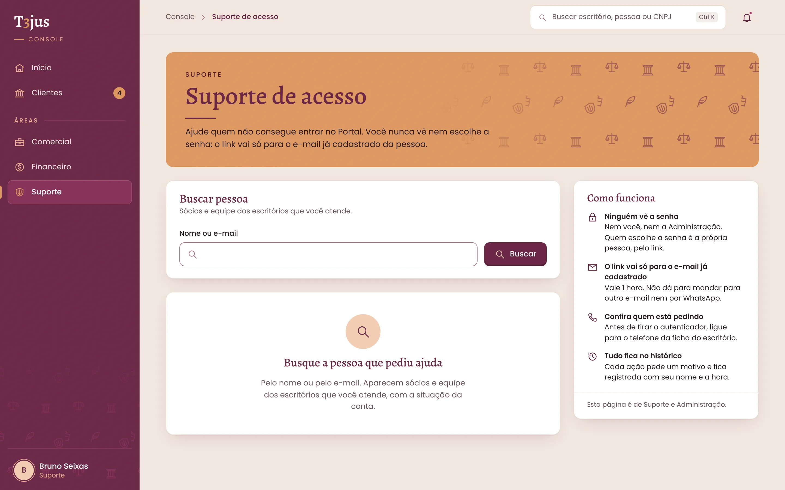
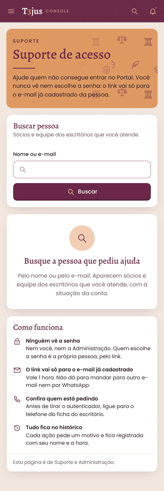

Busca vazia
Primeiro contato: o campo de busca e o que vai aparecer. Ao lado, as quatro regras da página: ninguém vê a senha, o link vai só para o e-mail cadastrado, conferir quem pede e tudo fica no histórico.
Abrir: suporte.html?estado=busca (estreite a janela para ver o celular)